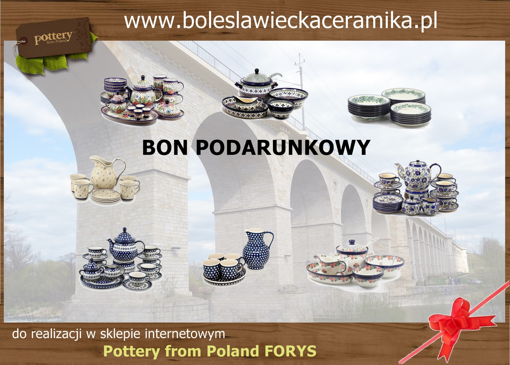
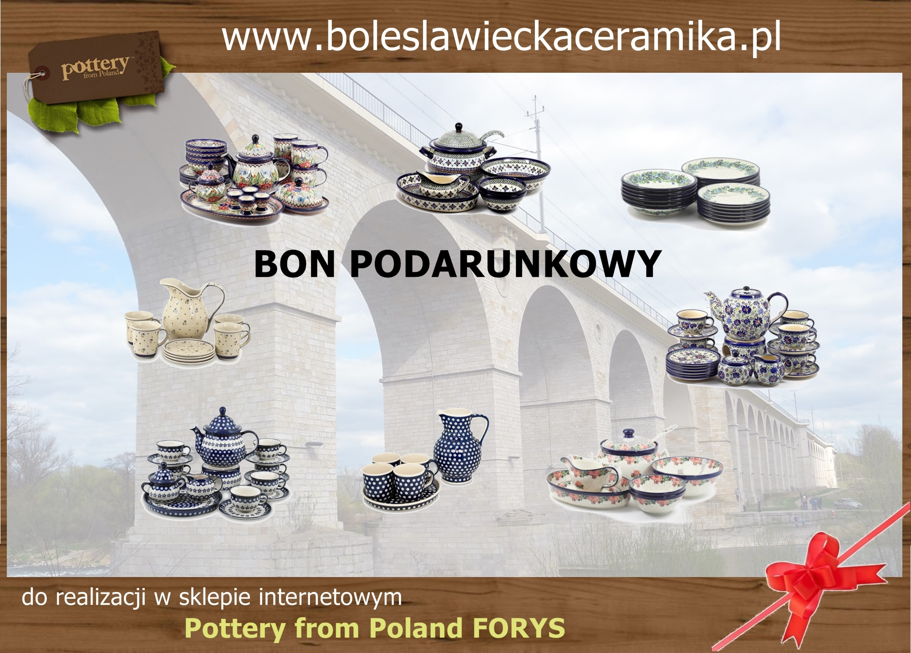

Moduł 02 - praca domowa
Poniżej praca domowa. Praca miała polegać na napisaniu dowolnej strony
na bazie wiedzy zdobytej do tej pory. Mam nadzieję uzyskać dwa w jednym: zaliczyć pracę domową i utrwalić
nowopoznany materiał.
Ponizej staram sie opisać poznane wskaźniki. Celowo nie podaję definicji ksiązkowych, bo to można
przeczytać wszędzie.
Skupiam sie na własnych uwagach, które w prosty sposób opisują jak zrozumiałem przedstawiony materiał.
W lekcji o JS, dość "po łebkach"em> potraktowany był przykład z przypisaniem obiektu do zmiennej. Może niepotrzebnie wyszedłem przed orkiestrę i nieco zgłębiłem temat. Chyba sie opłacało, bo zrozumialem o co chodzi.
1. Wskażnik <p>...</p> - paragraph
Niniejszy tekst jest wyświetloany na stronie dzięki zastosowaniu tego wskaźnika. Raczej proste. Mialem trochę kłopot z wyprowadzeniem na ekran tekstu "<p>...</p>", bo był traktowany jako słowa kuczowe HTML, ale od czego są Google?
2. Wskażnik <hx>...</h> - heading
Znaczniki Hx mają dwie funkcje : pozwalają na zamieszczenie pogrubionych tytułów dla odpowiednich fragmentów tekstu i dzięki numerowaniu 1-6 uzyskanie wizualnej hierarchii tekstu. Im wyższe x tym mniejsza czcionka nagłówka
3. Wskażnik <br> - nowa linia;
Służy do wymuszenia przejscia do nastepnej linii tekstu.
4. Wskażnik <strong>...</strong> - strong importance
Zaznaczenie waznego fragmentu tekstu.. Nie stosuje się gdy tylko chodzi o zwykłe
pogrubianie.
Tu coś nie gra, bo po co pogrubiać tekst jeśli on nie jest ważny ?commit
5. Wskażnik <b>...</b> - bring attention to
Zwrócenie uwagi czytelnika na wybrany fragment tekstu
6. Wskażnik <em>...</em> - emphasis
Położenie nacisku na wybrany fragment testu.
Szczerze mówiąc, nie jestem w stanie zrozumieć co poeta mial na myśli rozróżniając "zaznaczenie ważnego tekstu", "zwrócenie uwagi" i "zakcentowanie". To chyba nie ma większego znaczenia, więc dalej nie drążę.
7. Wskażnik <i>...</i> - bring attention to
Wyróżnienie w tekście pojęć technicznych, cytatów, słów obcych. Slava Ukraini.
8. Wskażnik <img> - obrazek

 
